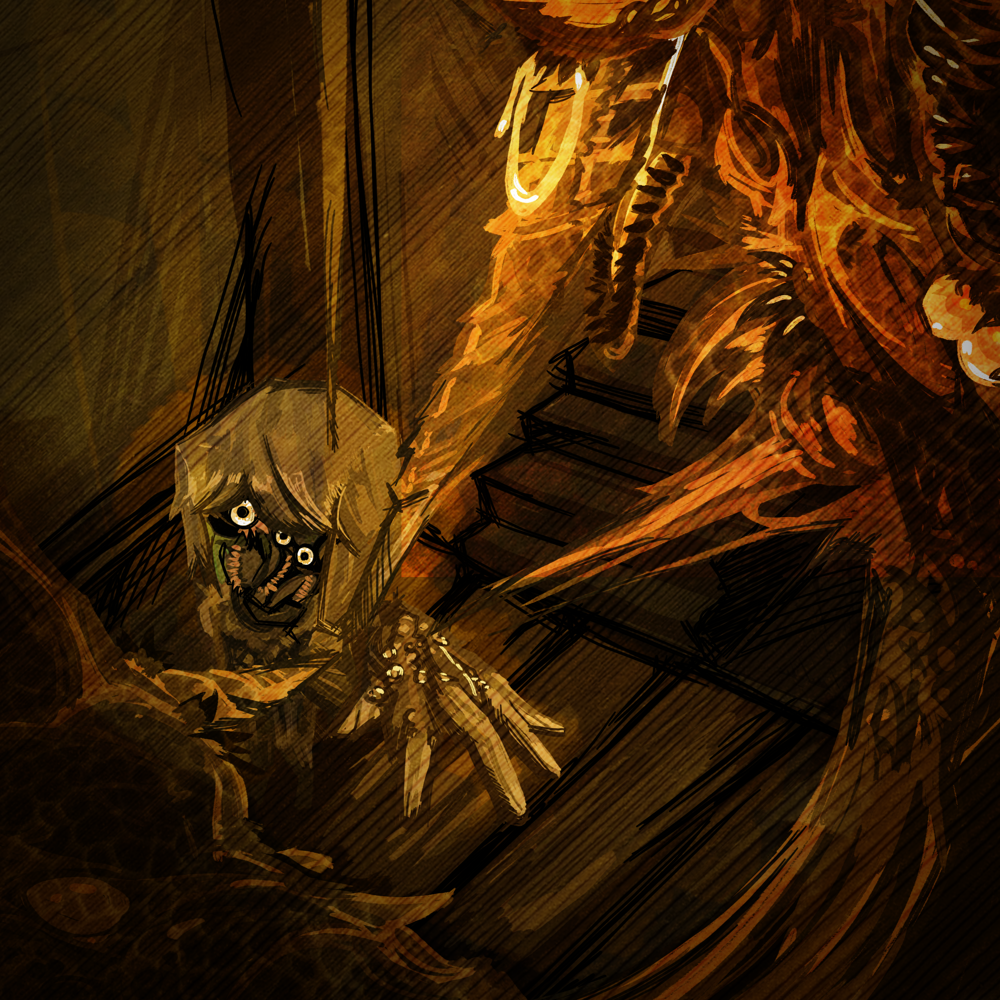

THE MOST COMFORTABLE MOLD
“She remained smiling even as she’s broken down.”

BASIC INFO
Threshold Consciousnesses: Lison
Dreamer Classification: (S1)1-13-1
Hazard Type: Hypnotic, Infectious, Environmental
Failure Types: Integration
VERTICE CLUSTER

CONTAINMENT GUIDELINES
GUIDELINE I: The humidity in (S1)1-13-1’s containment chamber should never fall below 75%. Should the automatic hydrating sprinkler system fail to operate during the noon of any day, report the issue to maintenance personnel immediately
GUIDELINE II: All personnel entering (S1)1-13-1’s containment chamber must wear Class B hazardous protection equipment. Should any personnel report coughing, difficulty breathing, sweating, and a strong desire to approach (S1)1-13-1 mass, they should be taken to the nearest on-site medical bay immediately.
GUIDELINE III: On work failure, appropriate non-lethal restraining measures should be taken to prevent contact between the Z-F operative and (S1)1-13-1.
GUIDELINE IV: Any employee under the effect of (S1)1-13-1 should be quarantined for a minimum of 3 hours before any work can resume.
REPLICATION TIPS
TIP I: You haven’t left the home for months. Your body has deteriorated and your mind is at its limit with boredom. Most pressing of all is your crushing loneliness.
TIP II: You spot that pesky patch of brown mold spreading across the ceiling above your bed. You try to clean it in spite of your physical state but inevitably fail at even reaching it.
TIP III: You pass the next three days in dull mundanity. Looking back up at the crumbling ceiling, you see that the mold has grown significantly since you last tried to clean it. You grab what you can and attempt a clean once more.
TIP IV: This time, you’ve reached a small part of it. As you attempt to wipe it down, you’ll get struck with an immense sense of guilt. You should leave it alone.
TIP V: A couple days will pass. You’ll live in the house together with your new friend, the mold. It speaks to you and you to come closer. You stick your left arm into the mold and it disappears within it with a wet squelch. Next thing you know, you’ve submerged your whole body inside it. You should smile; even as the mold breaks you down for digestion, all you can do is smile. Replication complete.
ESCAPE INFORMATION
Non-escaping entity.
DREAMING ALTERATION
Liskoya [Left Arm]
Obtainment: Stick your left arm inside (S1)1-13-1 and resist its influence for 30 seconds.
Variant Dreaming: Partial uniform and equipment, mixed defensive-offensive capabilities and utility.
Variant Waking: The alteration regenerates rapidly if damaged. No effect on the rest of the body.
RESEARCH STATUS
Observations deemed sufficient. Replication and maintenance reserved for Level 1 personnel. Research related to Black Projects underway. Other research inquiries require the approval of a Level 3 Administration staff.
BLACK PROJECTS
Product S11: Proposal to discover and isolate the hypnotic element(s) of (S1)1-13-1 for future project applications.
Status: Approved.
Research: Ongoing.
“The applications of this research are limitless. Just imagine what you could do with a ‘loyalty gel’. I’d want at least a hundred for myself.”
- Kasyade, Black Projects Overseer.